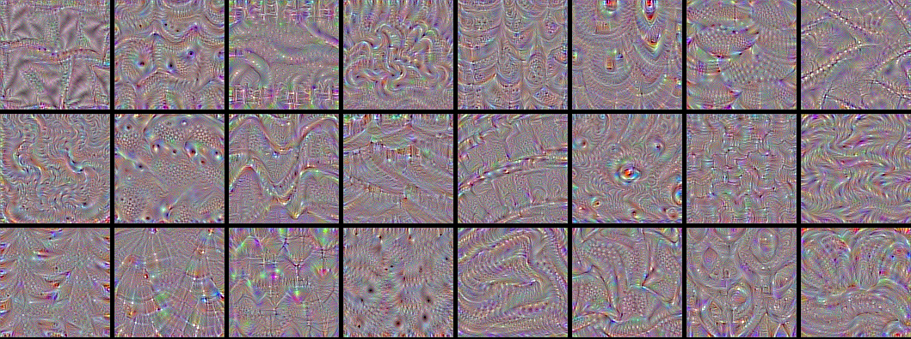
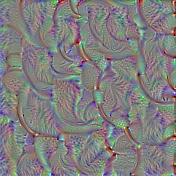
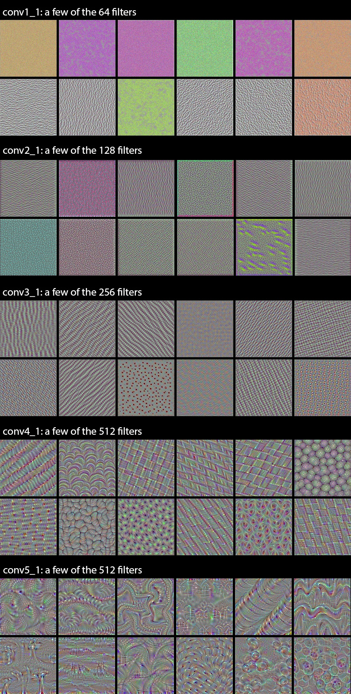
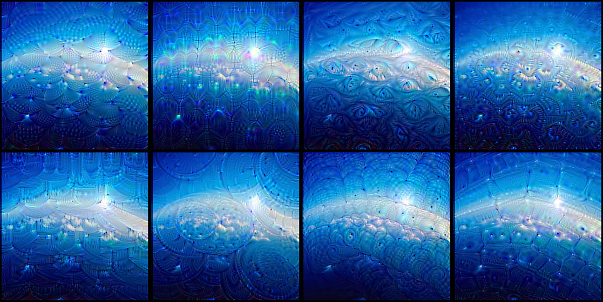
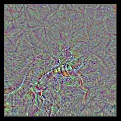
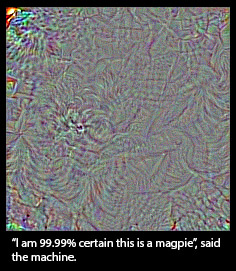

An exploration of convnet filters with Keras
Note: all code examples have been updated to the Keras 2.0 API on March 14, 2017. You will need Keras version 2.0.0 or higher to run them.
In this post, we take a look at what deep convolutional neural networks (convnets) really learn, and how they understand the images we feed them. We will use Keras to visualize inputs that maximize the activation of the filters in different layers of the VGG16 architecture, trained on ImageNet. All of the code used in this post can be found on Github.

VGG16 (also called OxfordNet) is a convolutional neural network architecture named after the Visual Geometry Group from Oxford, who developed it. It was used to win the ILSVR (ImageNet) competition in 2014. To this day is it still considered to be an excellent vision model, although it has been somewhat outperformed by more revent advances such as Inception and ResNet.
First of all, let's start by defining the VGG16 model in Keras:
from keras import applications
# build the VGG16 network
model = applications.VGG16(include_top=False,
weights='imagenet')
# get the symbolic outputs of each "key" layer (we gave them unique names).
layer_dict = dict([(layer.name, layer) for layer in model.layers])
Note that we only go up to the last convolutional layer --we don't include fully-connected layers. The reason is that adding the fully connected layers forces you to use a fixed input size for the model (224x224, the original ImageNet format). By only keeping the convolutional modules, our model can be adapted to arbitrary input sizes.
The model loads a set of weights pre-trained on ImageNet.
Now let's define a loss function that will seek to maximize the activation of a specific filter (filter_index) in a specific layer (layer_name). We do this via a Keras backend function, which allows our code to run both on top of TensorFlow and Theano.
from keras import backend as K
layer_name = 'block5_conv3'
filter_index = 0 # can be any integer from 0 to 511, as there are 512 filters in that layer
# build a loss function that maximizes the activation
# of the nth filter of the layer considered
layer_output = layer_dict[layer_name].output
loss = K.mean(layer_output[:, :, :, filter_index])
# compute the gradient of the input picture wrt this loss
grads = K.gradients(loss, input_img)[0]
# normalization trick: we normalize the gradient
grads /= (K.sqrt(K.mean(K.square(grads))) + 1e-5)
# this function returns the loss and grads given the input picture
iterate = K.function([input_img], [loss, grads])
All very simple. The only trick here is to normalize the gradient of the pixels of the input image, which avoids very small and very large gradients and ensures a smooth gradient ascent process.
Now we can use the Keras function we defined to do gradient ascent in the input space, with regard to our filter activation loss:
import numpy as np
# we start from a gray image with some noise
input_img_data = np.random.random((1, 3, img_width, img_height)) * 20 + 128.
# run gradient ascent for 20 steps
for i in range(20):
loss_value, grads_value = iterate([input_img_data])
input_img_data += grads_value * step
This operation takes a few seconds on CPU with TensorFlow.
We can then extract and display the generated input:
from scipy.misc import imsave
# util function to convert a tensor into a valid image
def deprocess_image(x):
# normalize tensor: center on 0., ensure std is 0.1
x -= x.mean()
x /= (x.std() + 1e-5)
x *= 0.1
# clip to [0, 1]
x += 0.5
x = np.clip(x, 0, 1)
# convert to RGB array
x *= 255
x = x.transpose((1, 2, 0))
x = np.clip(x, 0, 255).astype('uint8')
return x
img = input_img_data[0]
img = deprocess_image(img)
imsave('%s_filter_%d.png' % (layer_name, filter_index), img)
Result:

Visualize all the filters!
Now the fun part. We can use the same code to systematically display what sort of input (they're not unique) maximizes each filter in each layer, giving us a neat visualization of the convnet's modular-hierarchical decomposition of its visual space.
The first layers basically just encode direction and color. These direction and color filters then get combined into basic grid and spot textures. These textures gradually get combined into increasingly complex patterns.
You can think of the filters in each layer as a basis of vectors, typically overcomplete, that can be used to encode the layer's input in a compact way. The filters become more intricate as they start incorporating information from an increasingly larger spatial extent.

A remarkable observation: a lot of these filters are identical, but rotated by some non-random factor (typically 90 degrees). This means that we could potentially compress the number of filters used in a convnet by a large factor by finding a way to make the convolution filters rotation-invariant. I can see a few ways this could be achieved --it's an interesting research direction.
Shockingly, the rotation observation holds true even for relatively high-level filters, such as those in block4_conv1.
In the highest layers (block5_conv2, block5_conv3) we start to recognize textures similar to that found in the objects that network was trained to classify, such as feathers, eyes, etc.
Convnet dreams
Another fun thing to do is to apply these filters to photos (rather than to noisy all-gray inputs). This is the principle of Deep Dreams, popularized by Google last year. By picking specific combinations of filters rather than single filters, you can achieve quite pretty results. If you are interested in this, you could also check out the Deep Dream example in Keras, and the Google blog post that introduced the technique.

Finding an input that maximizes a specific class
Now for something else --what if you included the fully connected layers at the end of the network, and tried to maximize the activation of a specific output of the network? Would you get an image that looked anything like the class encoded by that output? Let's try it.
We can just define this very simple loss function:
model = applications.VGG16(include_top=True,
weights='imagenet')
loss = K.mean(model.output[:, output_index])
Let's apply it to output_index = 65 (which is the sea snake class in ImageNet). We quickly reach a loss of 0.999, which means that the convnet is 99.9% confident that the generated input is a sea snake. Let's take a look at the generated input.

Oh well. Doesn't look like a sea snake. Surely that's a fluke, so let's try again with output_index = 18 (the magpie class).

Ok then. So our convnet's notion of a magpie looks nothing like a magpie --at best, the only resemblance is at the level of local textures (feathers, maybe a beak or two). Does it mean that convnets are bad tools? Of course not, they serve their purpose just fine. What it means is that we should refrain from our natural tendency to anthropomorphize them and believe that they "understand", say, the concept of dog, or the appearance of a magpie, just because they are able to classify these objects with high accuracy. They don't, at least not to any any extent that would make sense to us humans.
So what do they really "understand"? Two things: first, they understand a decomposition of their visual input space as a hierarchical-modular network of convolution filters, and second, they understand a probabilitistic mapping between certain combinations of these filters and a set of arbitrary labels. Naturally, this does not qualify as "seeing" in any human sense, and from a scientific perspective it certainly doesn't mean that we somehow solved computer vision at this point. Don't believe the hype; we are merely standing on the first step of a very tall ladder.
Some say that the hierarchical-modular decomposition of visual space learned by a convnet is analogous to what the human visual cortex does. It may or may not be true, but there is no strong evidence to believe so. Of course, one would expect the visual cortex to learn something similar, to the extent that this constitutes a "natural" decomposition of our visual world (in much the same way that the Fourier decomposition would be a "natural" decomposition of a periodic audio signal). But the exact nature of the filters and hierarchy, and the process through which they are learned, has most likely little in common with our puny convnets. The visual cortex is not convolutional to begin with, and while it is structured in layers, the layers are themselves structured into cortical columns whose exact purpose is still not well understood --a feature not found in our artificial networks (although Geoff Hinton is working on it). Besides, there is so much more to visual perception than the classification of static pictures --human perception is fundamentally sequential and active, not static and passive, and is tightly intricated with motor control (e.g. eye saccades).
Think about this next time your hear some VC or big-name CEO appear in the news to warn you against the existential threat posed by our recent advances in deep learning. Today we have better tools to map complex information spaces than we ever did before, which is awesome, but at the end of the day they are tools, not creatures, and none of what they do could reasonably qualify as "thinking". Drawing a smiley face on a rock doesn't make it "happy", even if your primate neocortex tells you so.
That said, visualizing what convnets learn is quite fascinating --who would have guessed that simple gradient descent with a reasonable loss function over a sufficiently large dataset would be enough to learn this beautiful hierarchical-modular network of patterns that manages to explain a complex visual space surprisingly well. Deep learning may not be intelligence is any real sense, but it's still working considerably better than anybody could have anticipated just a few years ago. Now, if only we understood why... ;-)
@fchollet, January 2016